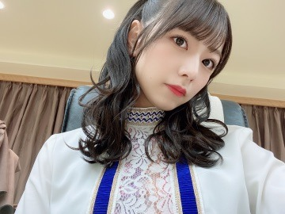

2020/1222Tue一番好きなものを離さないで
みなさまこんばんは
北野日奈子です！

同期で同い年で優しくて強い私の1番のライバルの未央奈が卒業発表をしました
ずっと前から聞いていたけど
初めて聞いた時から寂しいとか嫌だとか
そんなこと未央奈に言えなかったな。。
そうなんだね、そうか～。って返してたと思う。
私もそうする！とはもちろん言わなかったし
なんとなくずっと未央奈のいない二期生の形を想像して、そこにはぽっかり穴が空いてるのを感じているんだろうなって。
二期生の先頭でずっと頑張ってくれて
初めての選抜ではセンターに選ばれて
誰の想像をも超えるほどのいろいろな感情を抱かざるにはいられなかったと思います
誰にもわからないし全部は伝わらないと思います。
本人にしか見えないもの聞こえないものがあって
それを簡単に分かるよ。なんて言えないと思う
向かい風の中必死に立っている未央奈の姿を
テレビで純奈と一緒に見た時は、これが覚悟というものなんだと伝わってきました。
その頃の私にはまだ覚悟が足りてなかったと思います、必死に先輩たちに追いつこうとしている未央奈の姿を見て心が震えました。
グループのことグループ内での自分の立場
なりたい自分像、夢や目標を
しっかり考えてそれが揺らぐことなく
自分の芯にあって、
そんな未央奈の傍にいられたからこそ
私もきっと真っ直ぐに頑張って来れたんだと思う
感謝しているよ
だからこそ、1番の味方でいようと思って
私と未央奈がどれだけ価値観が違くても
性格が合わなくて大きい喧嘩をしたとしてもね
絶対私は味方でいなくてはいけないって心に決めてそれからずっとそうやって何年も何年も活動していました
もし未央奈が皆んなと違う方を選んでそれを離さないで一人で頑張っているのなら
私は迷わず未央奈と同じ方を選んで掴んで離さないと思ってやってたんだよ！
大袈裟に聞こえるかもしれないけど
変な形ではあるのかもしれないけど
味方でいること仲間でいることを
そうやって言葉にして口にすることで
少しでも未央奈が前を向いてくれたらいいと思って昔からずっと一緒に前を向いていました！
私が初めて選抜に選ばれた時は
二人でずっと一緒に過ごしていました。
その頃はまだ緊張ばっかりで、数秒だって離れるなんてできなかったなあ笑
思い出すと本当に色々とありました
笑うツボが同じだから二人でケラケラずっと笑って他の二期生にうるさいよお！って怒られたこともあるしね笑
ふざける時もやりすぎちゃうくらい笑
私の色々な場面でのきっかけにはいつも未央奈がいたと思います。
未央奈のすぐ後ろを走ってその背中を見ていた頃はがむしゃらだったし
未央奈の横顔をみて肩を並べて走っていた時期は未来に期待が溢れて希望を見て楽しかったよね。
私が休業した時はどう感じてたのかな？私は勝手に責任を感じているから、復帰してから今もずっと誰よりも強くあろうとしてるよ！
もう少しだけ同じ時間を過ごせるから
そのもう少しだけの時間でみる色々な景色を同じ気持ちで見られたらいいなって思います
大好きだよ！未央奈！
それから最後の活動が一緒じゃなくてごめんね
違う場所でお互いがみる大好きな乃木坂について
また話そうね、みおが卒業する頃にでも！


こんなおもちゃつけてはしゃいで、
14人の中でも私と未央奈しか
やらないと思うよ笑
アンダーライブが無事におわりました！
座長のたまちゃん、本当にしっかりしていて
隣にいて何の心配もなかったよ！
はじめてのセンターだと思えないほど
その場所が似合っていて風格があって圧倒的オーラでした！大好きなたまちゃんの横で三期生の成長を感じることができて、感動しました！
皆んなそれぞれ自分と何度も向き合って
今ライブをする意味、今ファンの方に私たちの姿をみてもらう意味、今ステージに立たなくてはならない意味を確実に同じ温度の物を共有できていたと思います。
何十公演とアンダーライブのステージに立たせてもらえてその度何か新しいものに出会えていましたが、今回のアンダーライブは目に見えない思いや愛が見えた気がしました。
それが今回のライブで得た新しいものです。
今回のアンダーライブには
何から向き合っていいのかわからなかったのが、最初でした。いつも泣きそうになりながら練習して、こんな気持ちのままやっていたらダメだと思いながら鏡に映る自分の姿をみることができなくて、何がダメなんだろうとか、なにをしたらいいんだろうとか自分の事がわからなくなっていたけど、今の私を見てくれている家族が友達がファンの方が、そのままの私が好きだと言ってくれるから、私は私が好きなみんなを幸せにしたいんだと気づきました。
どこにいてもやるべきことは同じだ、わかっていても心が折れる時もあって
でも揺らぐことのない大事なことをいつでも心に留めておけば
また頑張るために立ち上がれるから
この先きっと皆んなそれぞれに色々なことが起きるかもしれないけど、私は誰かのためにみんなのために皆んなと心を通わせたいと思いました。
大変な世界で大変な思いをしている中、私たちの努力を見にきてくれたみなさんに本当に感謝しています。ちまも言っていた今最大限に楽しめるベストな形での最高な時間だったと思います！私たちを見つけてくれてありがとうございます、私たちから目を離さないで見続けてくれてありがとうございます

たまが言ってくれてた
最強の14人です
2020/12/22 16:00
コメント(1779)
きぃちゃんが未央奈ちゃんの卒業について、どんなことを考えているのか、1番のライバルで1番の親友であった人が卒業する、すなわち、隣から居なくなってしまうというのは、自分にとってみれば、すごい辛いことだと思います。
私自身も、きぃちゃんとも年齢が近いので、考えることは同じかもしれませんが、そのような体験はしたことが無いので、少し上から目線に聞こえてしまうかもしれませんが、きぃちゃんは、｢強くて、明るい、元気な女の子｣だと思っています。それは、きぃちゃんだけの努力だけではなく、未央奈ちゃんたち2期生達の力や、先輩後輩関係なく、のびのびと活動してきた中で自然と身についたものだと思います。
きぃちゃんには、未央奈ちゃんの分まで頑張ってほしい。もちろん寂しいけど、その分、プラスに考えてきぃちゃんらしく頑張って欲しいです！！
私はずっと、きぃちゃんを応援しています！！！！！！！
私自身も、きぃちゃんとも年齢が近いので、考えることは同じかもしれませんが、そのような体験はしたことが無いので、少し上から目線に聞こえてしまうかもしれませんが、きぃちゃんは、｢強くて、明るい、元気な女の子｣だと思っています。それは、きぃちゃんだけの努力だけではなく、未央奈ちゃんたち2期生達の力や、先輩後輩関係なく、のびのびと活動してきた中で自然と身についたものだと思います。
きぃちゃんには、未央奈ちゃんの分まで頑張ってほしい。もちろん寂しいけど、その分、プラスに考えてきぃちゃんらしく頑張って欲しいです！！
私はずっと、きぃちゃんを応援しています！！！！！！！
日奈子ちゃんブログ更新ありがとう。
まずはアンダーライブお疲れ様！
今の北野日奈子を応援できる時間を噛み締めながら観る最高のライブでした。
日奈子ちゃんが心のままにパフォーマンスしているのも心から楽しんでいるのも全部見えて、応援していて良かったと思えたよっ！
日奈子ちゃんが書く言葉はモバメでもブログでも凄く心の奥に伝わる気がします。その言葉が大好きです。
日奈子ちゃんと一緒に悲しい、悔しい、と思えるのが今はとても大事な時間になっています。
素敵なブログをありがとうっ。
まずはアンダーライブお疲れ様！
今の北野日奈子を応援できる時間を噛み締めながら観る最高のライブでした。
日奈子ちゃんが心のままにパフォーマンスしているのも心から楽しんでいるのも全部見えて、応援していて良かったと思えたよっ！
日奈子ちゃんが書く言葉はモバメでもブログでも凄く心の奥に伝わる気がします。その言葉が大好きです。
日奈子ちゃんと一緒に悲しい、悔しい、と思えるのが今はとても大事な時間になっています。
素敵なブログをありがとうっ。
素敵な感情が溢れて伝わってくるブログでした。
大好きで応援してます。
どんな道でも輝く姿楽しみにしてます。
大好きで応援してます。
どんな道でも輝く姿楽しみにしてます。
ブログ更新ありがとう。最近は急に寒くなったね。今日も可愛いね。確かに未央奈ちゃんが卒業するのは寂しいね。ミーグリのチケット3枚当選したよ。楽しみにしています。一昨日のライブ観たよ。感動したし楽しかったよ。お疲れ様。日奈子ちゃんはもし10万円が自由に使えたら何に使いますか?好きなおせち料理の料理は何ですか?好きなお弁当のおかずは何ですか?好きなお餅の食べ方は何ですか?四季の中で1番好きな季節は何時ですか?クリスマスプレゼントを貰うなら何が欲しいですか?好きな花は何ですか?育ててみたい野菜や果物は何ですか?よく買うアイスは何ですか?好きな駄菓子は何ですか?今年を漢字一文字で表現するなら何ですか?これからも頑張ってください。ずっと応援しています。ファイト。次回のブログ更新楽しみにしています。体調を崩さないように頑張ってね。
アンダラ行ったよ！！最高だった！
一生きいちゃんについていきます
一生きいちゃんについていきます
モバメありがとう！アンダーライブ3日間お疲れさまでした！
アンダーライブの感想です！
初日だけ現場で残り２日は配信でみたよ(^^)
久々に動くひなこをみれて嬉しかった！最初にアンダーが流れた時は自然に泣いちゃってたんだけどひなこが笑顔で歌ってる姿を見て推しが笑顔なのに泣いてる場合じゃないなと泣き止むことができました。
日常ではもう圧巻のパフォーマンス！何回見ても鳥肌がたつ！！日常を披露するたびにどんどん凄みが増してる気がする！
個人的には日常のひなこは狩りをする獣のイメージ笑
油断してたらこっちが殺られるみたいな笑
あと間奏ラストサビ前の時にニコって笑ったのはそのあとのラストサビのパフォーマンスが最高に引き立ってたと思う！
本当に最高だった！
最後のMCでひなこのどこにいたってやることは同じって言葉がすごい胸に響いた。それは俺も同じ！ひなこがどこにいようと推しメンなのは変わらないっていうのが再確認できたしさらに好きが増したよ！！
これからも推していくんでよろしくね！
めっちゃ支えるよ！！
未央奈についてはまたコメントするね！
アンダーライブの感想です！
初日だけ現場で残り２日は配信でみたよ(^^)
久々に動くひなこをみれて嬉しかった！最初にアンダーが流れた時は自然に泣いちゃってたんだけどひなこが笑顔で歌ってる姿を見て推しが笑顔なのに泣いてる場合じゃないなと泣き止むことができました。
日常ではもう圧巻のパフォーマンス！何回見ても鳥肌がたつ！！日常を披露するたびにどんどん凄みが増してる気がする！
個人的には日常のひなこは狩りをする獣のイメージ笑
油断してたらこっちが殺られるみたいな笑
あと間奏ラストサビ前の時にニコって笑ったのはそのあとのラストサビのパフォーマンスが最高に引き立ってたと思う！
本当に最高だった！
最後のMCでひなこのどこにいたってやることは同じって言葉がすごい胸に響いた。それは俺も同じ！ひなこがどこにいようと推しメンなのは変わらないっていうのが再確認できたしさらに好きが増したよ！！
これからも推していくんでよろしくね！
めっちゃ支えるよ！！
未央奈についてはまたコメントするね！
日奈子ちゃん！とても素敵なブログをありがとう！
日奈子ちゃんの選ぶ言葉はいつも素敵で、なんてコメントをしたらいいか。。ととても悩んでしまいます。
わたしは人に気持ちを伝えるのが得意じゃないから（ ; ; ）日奈子ちゃんにこれを伝えたい！って思っても上手く伝えられない時もあって、、
日奈子ちゃんの書く文章がわたしはとっても大好きです♡
未央奈ちゃんに対する思い、とても伝わりました。
日奈子ちゃんは本当に素敵な女性です！本当に女性からみても憧れで、とても大きな存在！
乃木坂46にいてくれて、改めてありがとう！日奈子ちゃんがいるから乃木坂を好きになったし日奈子ちゃんがいるから今後も応援していきたいと思ってます！
またモバメでもブログでも待ってるね(﹡ˆᴗˆ﹡)
日奈子ちゃんの選ぶ言葉はいつも素敵で、なんてコメントをしたらいいか。。ととても悩んでしまいます。
わたしは人に気持ちを伝えるのが得意じゃないから（ ; ; ）日奈子ちゃんにこれを伝えたい！って思っても上手く伝えられない時もあって、、
日奈子ちゃんの書く文章がわたしはとっても大好きです♡
未央奈ちゃんに対する思い、とても伝わりました。
日奈子ちゃんは本当に素敵な女性です！本当に女性からみても憧れで、とても大きな存在！
乃木坂46にいてくれて、改めてありがとう！日奈子ちゃんがいるから乃木坂を好きになったし日奈子ちゃんがいるから今後も応援していきたいと思ってます！
またモバメでもブログでも待ってるね(﹡ˆᴗˆ﹡)
最強でした。
最強の一言しか似合わない「最強の14人」でした。
ありがとう。
これからも宜しくお願いします。
最強の一言しか似合わない「最強の14人」でした。
ありがとう。
これからも宜しくお願いします。
ん！
最強で最高の14人です
最強で最高の14人です
アンダーライブお疲れ様でした！
隙を見せないパフォーマス、それでいて熱量やがんむしゃらさも感じる最高のライブでした！
テレビ越しだけど手が届きそうな、すぐ目の前にいるような表現や表情、ほんっとうに感動しました！！！！
アフター配信とかの少しゆるっとしてて可愛い姿みて「さっきまであんなカッコよくパフォーマンスしてたのかこの子達！」みたいなギャップも最高で…本当最強の14人だよぉぉぉ(つД`)ノ
日奈子ちゃんの体を大きく使ったダンスが大好き、寄ってるときは勿論なんだけど引いててもちょーーー目がいくの！(^.^)
新曲も凄く良かった！ラジオで音源公開されたから既に聴きまくってる！
またコメント書くね〜
隙を見せないパフォーマス、それでいて熱量やがんむしゃらさも感じる最高のライブでした！
テレビ越しだけど手が届きそうな、すぐ目の前にいるような表現や表情、ほんっとうに感動しました！！！！
アフター配信とかの少しゆるっとしてて可愛い姿みて「さっきまであんなカッコよくパフォーマンスしてたのかこの子達！」みたいなギャップも最高で…本当最強の14人だよぉぉぉ(つД`)ノ
日奈子ちゃんの体を大きく使ったダンスが大好き、寄ってるときは勿論なんだけど引いててもちょーーー目がいくの！(^.^)
新曲も凄く良かった！ラジオで音源公開されたから既に聴きまくってる！
またコメント書くね〜
アンダーライブお疲れ様でした。とても感動しました。
きいちゃんとても輝いていてかっこよかったです。
これから堀北コンビを見れる期間が短いと思うととても悲しいです。堀北コンビはとても面白いですね。
堀ちゃんが乃木坂に在籍している間にたくさん堀北コンビを見たいです。
お身体に気をつけてこれからもお仕事頑張ってください。
きいちゃんとても輝いていてかっこよかったです。
これから堀北コンビを見れる期間が短いと思うととても悲しいです。堀北コンビはとても面白いですね。
堀ちゃんが乃木坂に在籍している間にたくさん堀北コンビを見たいです。
お身体に気をつけてこれからもお仕事頑張ってください。
ブログ更新ありがとう！
堀北コンビ本当に大好きだよ！！
アンダラ一日目しか行けなかったけどめっちゃん感動した！
これからも体調に気をつけて頑張って！！！
堀北コンビ本当に大好きだよ！！
アンダラ一日目しか行けなかったけどめっちゃん感動した！
これからも体調に気をつけて頑張って！！！
ブログ更新ありがとねひなこちゃん！
ずっと目を離さずに見てます、ひなこちゃんらしく乃木坂の活動を楽しんでください。いつまでも味方ですよ！！
ずっと目を離さずに見てます、ひなこちゃんらしく乃木坂の活動を楽しんでください。いつまでも味方ですよ！！
アンダラ千秋楽、きいちゃんのタオル持って参戦しました！！
2階席だったけどステージの目の前で楽しそうにおどってるきいちゃんを見て、涙が出てきました。アンダーで始まったライブ。
きいちゃんの気持ちをわかることはできないけどアンダーで始まって涙が溢れて、日常でまた涙が溢れました。きいちゃんがかがやいていて、きらきらしていて、飛び跳ねてて、最後は無邪気に笑っていて、その笑顔に救われています。私の生きる源をありがとうございました！大好きです！❤️
北野日奈子を掴んで離さないので、たくさん熱を伝えるので、見守っていくので、どんなひなこちゃんも大好きなので
応援してます⊂( *･ω･ )⊃
応援してます⊂( *･ω･ )⊃
日奈子ちゃん忙しい中更新ありがとうございます。このブログを読み、何度かウルウルしたことはあったけれどはじめて涙を流しました。日奈子の言葉は、いつも素直で心に響きます。27枚目絶対選抜に入れるよう願っているし活動を応援しています。アンダラお疲れ様でした。これからも永遠に大好きです。
アンダーライブお疲れ様！！
全部とてもかっこよかった！！
改めて大好きだと思ったし、これからもずっと応援します！
全部とてもかっこよかった！！
改めて大好きだと思ったし、これからもずっと応援します！
未央奈ときぃちゃんのコンビほんとに最強！！
この14人のアンダーライブほんとに最強！！
たくさん元気をしあわせを勇気をありがとー(^o^)v
ぼーちゃん(^o^)v 福島
涙が止まらん…！
「味方だよ。」って言葉、みおなちゃんにとってはとんでもなく心強いものだったはず。無条件に味方でいてくれる人の存在が、自分を頑張らせてくれる場面を経験したことがあるから、そう感じます。
だから、僕たち日奈子推しは無条件にいつまでも、日奈子ちゃんの味方です。言葉にしました！笑
アンダーライブほんとにほんとにお疲れ様！
日奈子ちゃんの笑顔からも涙からも、色々な思いを受け取りました。
日奈子ちゃんのことが大好きな僕たちを、とっても幸せにしてくれてましたよ！頑張ってくれてありがとうね。
「味方だよ。」って言葉、みおなちゃんにとってはとんでもなく心強いものだったはず。無条件に味方でいてくれる人の存在が、自分を頑張らせてくれる場面を経験したことがあるから、そう感じます。
だから、僕たち日奈子推しは無条件にいつまでも、日奈子ちゃんの味方です。言葉にしました！笑
アンダーライブほんとにほんとにお疲れ様！
日奈子ちゃんの笑顔からも涙からも、色々な思いを受け取りました。
日奈子ちゃんのことが大好きな僕たちを、とっても幸せにしてくれてましたよ！頑張ってくれてありがとうね。
これからはきいちゃんが2期生を引っ張っていってね。
応援してます。
ほんとにライブ感動したよ！
次は絶対に当てて会場で見る！
応援してます。
ほんとにライブ感動したよ！
次は絶対に当てて会場で見る！
最終日行きました！アンダーライブは最強です！
最高のライブをありがとう！
最高のライブをありがとう！
日奈子ちゃん！ブログありがとう！！
アンダーライブ武道館、初日行ったよ。
久しぶりに生で見る日奈子ちゃんはとても活き活きとしてて、座長のたまちゃんを隣りで支えようとする眼差しを、そして純奈ちゃんや葉月ちゃんらメンバー達とわちゃわちゃしてる姿を見て、あー僕の好きな日奈子ちゃんだって思いました。
これからも厳しい状況下が続きそうだけど、僕ら一人ひとりがしっかり対策をして早く以前の日常に戻れるようにしたいと思います。日常といえば｢日常｣最高でした！
未央奈の卒業には正直驚きました。
僕らでさえそうなんだから日奈子ちゃんにとっては言葉に出来ない想いがあると思います。
でもまだ時間はあるし、その時まで沢山堀北の思い出を作って欲しいです。
いつもありがとう日奈子ちゃん。
身体に気をつけて！チップちゃんにもよろしく伝えて下さい笑
アンダーライブ武道館、初日行ったよ。
久しぶりに生で見る日奈子ちゃんはとても活き活きとしてて、座長のたまちゃんを隣りで支えようとする眼差しを、そして純奈ちゃんや葉月ちゃんらメンバー達とわちゃわちゃしてる姿を見て、あー僕の好きな日奈子ちゃんだって思いました。
これからも厳しい状況下が続きそうだけど、僕ら一人ひとりがしっかり対策をして早く以前の日常に戻れるようにしたいと思います。日常といえば｢日常｣最高でした！
未央奈の卒業には正直驚きました。
僕らでさえそうなんだから日奈子ちゃんにとっては言葉に出来ない想いがあると思います。
でもまだ時間はあるし、その時まで沢山堀北の思い出を作って欲しいです。
いつもありがとう日奈子ちゃん。
身体に気をつけて！チップちゃんにもよろしく伝えて下さい笑
最強の14人のみんな
アンダーライブお疲れ様でした(^-^)
もうTwitterでも
アンダラの事で盛り上がってて
見た人の言葉からも感動が伝わってきた！
会場で見られたらもっとすごいんだろうなぁ。
未央奈の卒業発表は
最初に混乱から入って
すぐに心に穴が開いたような感じになったよ。
ずっとにきちゃんを引っ張ってくれてたから
どうなっちゃうの！？って…。
最後の活動が一緒じゃなくて…って。
私もそれ思ってて、
なんで一緒にさせてあげないの！？
って思ったけど、
今の乃木坂の事を考えたベストな考えなら
仕方ないのかなって勝手に納得しました。
今の日奈子ちゃんに託された役割が
そこにあるんだよ。
私は日奈子ちゃんがどこにいても
変わらずに応援してるからね(゜∇^d)!!
いつもありがとう❀.(*´▽`*)❀.
アンダーライブお疲れ様でした(^-^)
もうTwitterでも
アンダラの事で盛り上がってて
見た人の言葉からも感動が伝わってきた！
会場で見られたらもっとすごいんだろうなぁ。
未央奈の卒業発表は
最初に混乱から入って
すぐに心に穴が開いたような感じになったよ。
ずっとにきちゃんを引っ張ってくれてたから
どうなっちゃうの！？って…。
最後の活動が一緒じゃなくて…って。
私もそれ思ってて、
なんで一緒にさせてあげないの！？
って思ったけど、
今の乃木坂の事を考えたベストな考えなら
仕方ないのかなって勝手に納得しました。
今の日奈子ちゃんに託された役割が
そこにあるんだよ。
私は日奈子ちゃんがどこにいても
変わらずに応援してるからね(゜∇^d)!!
いつもありがとう❀.(*´▽`*)❀.
全ての出会いに感謝、同じ二期生として乃木坂46で出会えて良かったね。この出会いは一生ものだね。
堀北コンビ大好きです。
堀北コンビ大好きです。
きいちゃん、どうもmizu-mizuです(￣▽￣)
ブログ更新ありがとうございます！
アンダーライブ、お疲れ様でした。
初日に日本武道館に観に行きました。
コロナ禍の中でのライブ
今までとは違う形のライブでしたね！
バルーンを使ったライブ、とても楽しかったです。
年末も音楽番組や紅白などお忙しいと思いますが
コロナの感染者が増えていますので体調には気をつけてください。
またコメントします。
ブログ更新ありがとうございます！
アンダーライブ、お疲れ様でした。
初日に日本武道館に観に行きました。
コロナ禍の中でのライブ
今までとは違う形のライブでしたね！
バルーンを使ったライブ、とても楽しかったです。
年末も音楽番組や紅白などお忙しいと思いますが
コロナの感染者が増えていますので体調には気をつけてください。
またコメントします。
アンダラ見に行ったら、きいちゃんに心奪われてしまいました！はっきりと決めていなかった乃木坂46の推しもきいちゃんに決定しました！ちょっと遅いかもしれないけど、これから全力で応援していきます！これからも頑張ってください！自分も頑張ります！
未央奈への想い、よくわかりました！
日奈子ちゃん、ブログありがとう。
未央奈ちゃんへの想い、たくさん伝わってきました。
伝えてくれてありがとう。
アンダーライブも3日間お疲れ様でした。
私は、配信で3日間見させてもらって、本当に毎日が楽しかったし、何より幸せでした。
最強の14人です！
体調には気をつけてください☺︎
未央奈ちゃんへの想い、たくさん伝わってきました。
伝えてくれてありがとう。
アンダーライブも3日間お疲れ様でした。
私は、配信で3日間見させてもらって、本当に毎日が楽しかったし、何より幸せでした。
最強の14人です！
体調には気をつけてください☺︎
アンダーライブ2日間配信で視聴しました。日奈子ちゃんのパフォーマンス、とても素晴らしかったです。日常やアンダーなどのかっこいいパフォーマンスも、13金や生まれたままでなどの可愛らしいパフォーマンスも全部キラキラしていました。日奈子ちゃんはどこにいても輝ける力を持っていると思いますよ！改めて大好きだなと感じました！寒い日が続いているので体調には気をつけてくださいね、いつでも応援しています。
大好き、これからも応援します！
きいちゃんお疲れ様☺︎
今回のライブはきいちゃんにとって色んな思いがあって、でもこうしてブログやモバメに気持ちを書いてくれることがすごく嬉しいです。なんて言葉をかけていいのか正解がわからなくても正直な気持ちを知りたいと思ってくれる強さも。あんなにキラッキラなきいちゃんの表情もダンスも裏にはたくさんの頑張りがあって、それをファンは応援することしかできないことが悔しいです。選抜発表があるたびなにかしてあげられることないのかなって思います。なにが正解かわからないけど、今回のアンダラで改めて応援して頑張ってる姿を見届けることができることも当たり前じゃなくて一人の女の子が人生かけてアイドルになってくれてその時間を、頑張ってくれてファンに見せてくれて幸せをくれてほんとにありがとう。最強の14人です！！
これからもずーっと応援してます！！
久しぶりに塩アイス見たいなっ
体調気をつけてね！！大好きです！！☺︎
今回のライブはきいちゃんにとって色んな思いがあって、でもこうしてブログやモバメに気持ちを書いてくれることがすごく嬉しいです。なんて言葉をかけていいのか正解がわからなくても正直な気持ちを知りたいと思ってくれる強さも。あんなにキラッキラなきいちゃんの表情もダンスも裏にはたくさんの頑張りがあって、それをファンは応援することしかできないことが悔しいです。選抜発表があるたびなにかしてあげられることないのかなって思います。なにが正解かわからないけど、今回のアンダラで改めて応援して頑張ってる姿を見届けることができることも当たり前じゃなくて一人の女の子が人生かけてアイドルになってくれてその時間を、頑張ってくれてファンに見せてくれて幸せをくれてほんとにありがとう。最強の14人です！！
これからもずーっと応援してます！！
久しぶりに塩アイス見たいなっ
体調気をつけてね！！大好きです！！☺︎
アンダーライブお疲れ様でした!!!
僕は3日間配信で見てましたがこっちまで熱気が伝わってくるほど熱いライブでした！
日常のカッコよさはもちろん、アンダーや君僕の儚さなどとてもよかったです！
1番は選抜に入って活動することかもしれないけど選抜でもアンダーでも頑張り方は同じだと思うのでまた選抜入りしたらそれまでアンダーで貯めてきたものを爆発させてくれると思っています！
プレッシャーに感じてしまったらすみません
未央奈の卒業には僕たちには計り知れない程の想いがあると思いますが卒業までの時間を大切にね！
とにかく僕は日奈子ちゃんが好きだし、毎日頑張ろうと思えます！
年末の歌番組では歌唱メンバーなのかな？
楽しみにしています!!!
2020年もありがとうございました
良いお年を〜
僕は3日間配信で見てましたがこっちまで熱気が伝わってくるほど熱いライブでした！
日常のカッコよさはもちろん、アンダーや君僕の儚さなどとてもよかったです！
1番は選抜に入って活動することかもしれないけど選抜でもアンダーでも頑張り方は同じだと思うのでまた選抜入りしたらそれまでアンダーで貯めてきたものを爆発させてくれると思っています！
プレッシャーに感じてしまったらすみません
未央奈の卒業には僕たちには計り知れない程の想いがあると思いますが卒業までの時間を大切にね！
とにかく僕は日奈子ちゃんが好きだし、毎日頑張ろうと思えます！
年末の歌番組では歌唱メンバーなのかな？
楽しみにしています!!!
2020年もありがとうございました
良いお年を〜
先ずはアンダーライブお疲れ様でした。
配信での参加だったけど、楽しい時間でした。
ありがとうございました。
いつも頑張り屋の日奈子ちゃん、
胸の内を伝えてくれてありがとう。
確かに寂しいよね。ファンもみんなそうだよ。
アンダーだと活躍が見えにくいけど、
みんなどんな小さい活躍でも探してくれます。
いや、自然と見つけちゃいます。
自然体で、笑顔いっぱいの日奈子ちゃんが
一番なので、余り色々と背負い込まないでね。
いつも応援してるよ！では、では。
配信での参加だったけど、楽しい時間でした。
ありがとうございました。
いつも頑張り屋の日奈子ちゃん、
胸の内を伝えてくれてありがとう。
確かに寂しいよね。ファンもみんなそうだよ。
アンダーだと活躍が見えにくいけど、
みんなどんな小さい活躍でも探してくれます。
いや、自然と見つけちゃいます。
自然体で、笑顔いっぱいの日奈子ちゃんが
一番なので、余り色々と背負い込まないでね。
いつも応援してるよ！では、では。
きいちゃーん！(泣)
アンダーライブお疲れ様でした！
自分の気持ちに向き合うこと、折れてもまた立ち上がることが出来るのはきいちゃんの''つよさ"だと思います。そんなあなたを見てるから僕達も頑張ろう、進み続けなきゃいけないと思えます。
大変な世界で大変な思いをしてる中、ライブでパフォーマンスしてくれてありがとう。
本当にありがとう。
自分の気持ちに向き合うこと、折れてもまた立ち上がることが出来るのはきいちゃんの''つよさ"だと思います。そんなあなたを見てるから僕達も頑張ろう、進み続けなきゃいけないと思えます。
大変な世界で大変な思いをしてる中、ライブでパフォーマンスしてくれてありがとう。
本当にありがとう。
ブログ更新ありがと〜
2期の先頭を走り続けてくれた未央奈の卒業には自分も驚きました。勝手にまだ居てくれるもんだと思ってました。これからは日奈子さんが2期を乃木坂を引っ張っていける存在になると自分は思っています。
アンダラお疲れ様でした。3日間配信だけど見させていただきました！ライブを重ねる度に目が離せなくなります。色んな日奈子さん見れて楽しかった！
2期の先頭を走り続けてくれた未央奈の卒業には自分も驚きました。勝手にまだ居てくれるもんだと思ってました。これからは日奈子さんが2期を乃木坂を引っ張っていける存在になると自分は思っています。
アンダラお疲れ様でした。3日間配信だけど見させていただきました！ライブを重ねる度に目が離せなくなります。色んな日奈子さん見れて楽しかった！
堀北大好きだよ。
2期生大好きだよ。
きぃちゃん大好きだよ！！
2期生大好きだよ。
きぃちゃん大好きだよ！！
きいちゃんの言葉を伝えてくれてありがとう。
アンダラお疲れ様でした。
アンダラお疲れ様でした。
日奈子ちゃんアンダーライブお疲れ様！楽しかったよ、最高でした！！
日奈子ちゃんアンダーライブお疲れ様☺️このご時世の中でライブをしてくれたことに感謝でいっぱいです。日奈子ちゃんの笑顔が見れてよかったよ☺️そして未央奈ちゃんの卒業に関してのコメントすごく感動した 未央奈ちゃんの横にはいつも日奈子ちゃんがいて同い年でいっぱい笑いあってたイメージが強いです。
乃木坂世界旅で2人の旅行見た時に素直に羨ましいと思ったよ。いちばん近くに1番のライバルがいて、そして1番の友達がいることがどれだけ幸せなんだろうなって。最後に一緒に活動できんかったこと謝らないでほしいな。きっと未央奈ちゃんもそう思ってると思う。これから日奈子ちゃんが乃木坂を引っ張って行くの楽しみにしてます。未央奈ちゃんと過ごせる最後の最後までいっぱい笑いあっていい思い出を作って欲しいです☺️日奈子ちゃん大好きだよ〜☺️
乃木坂世界旅で2人の旅行見た時に素直に羨ましいと思ったよ。いちばん近くに1番のライバルがいて、そして1番の友達がいることがどれだけ幸せなんだろうなって。最後に一緒に活動できんかったこと謝らないでほしいな。きっと未央奈ちゃんもそう思ってると思う。これから日奈子ちゃんが乃木坂を引っ張って行くの楽しみにしてます。未央奈ちゃんと過ごせる最後の最後までいっぱい笑いあっていい思い出を作って欲しいです☺️日奈子ちゃん大好きだよ〜☺️
我等友情永久不滅
未央奈ときいちゃんの未来が明るい事を祈ります
未央奈ときいちゃんの未来が明るい事を祈ります
日奈子ちゃんがいろいろな思いでここ数ヶ月を過ごしてきたか僕らには分かりきれないほど悩んで葛藤したと思います。
でもそんななかでもいつも笑顔でみんなを引っ張ってきてくれてありがとうございます。
いつになるか分からないけど1番のライバルで1番の戦友が旅立ちつけど、どんな時でも1番のファンの僕達がついています。
弱音や本音をどんどんはいてください。
その分僕達が何倍にもして支えます。
これからもずっとよろしくお願いします！
でもそんななかでもいつも笑顔でみんなを引っ張ってきてくれてありがとうございます。
いつになるか分からないけど1番のライバルで1番の戦友が旅立ちつけど、どんな時でも1番のファンの僕達がついています。
弱音や本音をどんどんはいてください。
その分僕達が何倍にもして支えます。
これからもずっとよろしくお願いします！
最後の場所は
2人離れてしまったけど、
今回のアンダラには
日奈子がいてくれてすごく心強く
楽しかったよ。ありがとう。
未央奈がいなくなる二期生の想像が
できない部分も大きいけれど、
また次には日奈子が選抜に帰ってきてくれると
信じて今を楽しみます。
2人離れてしまったけど、
今回のアンダラには
日奈子がいてくれてすごく心強く
楽しかったよ。ありがとう。
未央奈がいなくなる二期生の想像が
できない部分も大きいけれど、
また次には日奈子が選抜に帰ってきてくれると
信じて今を楽しみます。
日奈子ちゃんブログありがとう、！
ブログ更新ありがとう！
未央奈の卒業は正直さみしい気持ちが強いです。未央奈が2期生の先頭をひた走ってくれたから今の2期生の形があると思うし、初めて未央奈がアンダーに来た時も色んな複雑な気持ちは全て置いて、未央奈を必死に支えようとしてたきいちゃんを見て、本当に素敵な関係だなって思ったのが今では懐かしいです。
残りの時間を大切に思い出沢山作って、おばあちゃんになった時にでも笑ってはなせるといいね☺︎
アンダーライブお疲れ様でした。本当に素晴らしい公演でした。
2日目のmcできいちゃんがたまちゃんに対してコメントしてたことや、公演おわりにひなちまが言ってたたまちゃんへの感謝の気持ちなどを聞いて、僕たちファンの知らない所でもたまちゃんが凄く愛されてることがわかったし、そんな素敵な雰囲気に包まれた乃木坂は最高だなって思いました。
どこにいてもやるべきことは同じだ。この言葉も今は前向きに捉える事ができるし、今回のアンダラでも常にキラキラ輝いているきいちゃんは凄くかっこよくみえたよ。
またこうしてライブができる機会が早く来ればいいなって心から思います、その時もずっときいちゃんを目で追ってるね笑
ではまた！
未央奈の卒業は正直さみしい気持ちが強いです。未央奈が2期生の先頭をひた走ってくれたから今の2期生の形があると思うし、初めて未央奈がアンダーに来た時も色んな複雑な気持ちは全て置いて、未央奈を必死に支えようとしてたきいちゃんを見て、本当に素敵な関係だなって思ったのが今では懐かしいです。
残りの時間を大切に思い出沢山作って、おばあちゃんになった時にでも笑ってはなせるといいね☺︎
アンダーライブお疲れ様でした。本当に素晴らしい公演でした。
2日目のmcできいちゃんがたまちゃんに対してコメントしてたことや、公演おわりにひなちまが言ってたたまちゃんへの感謝の気持ちなどを聞いて、僕たちファンの知らない所でもたまちゃんが凄く愛されてることがわかったし、そんな素敵な雰囲気に包まれた乃木坂は最高だなって思いました。
どこにいてもやるべきことは同じだ。この言葉も今は前向きに捉える事ができるし、今回のアンダラでも常にキラキラ輝いているきいちゃんは凄くかっこよくみえたよ。
またこうしてライブができる機会が早く来ればいいなって心から思います、その時もずっときいちゃんを目で追ってるね笑
ではまた！
これからはきいちゃんの番ですね。頑張ってください。応援してます。
アンダーライブ最高でした。
アンダーライブ最高でした。
同い年としてお2人本当に誇りに思います。
同い年で幸せです、いつもありがとう！
これからも応援してます！
同い年で幸せです、いつもありがとう！
これからも応援してます！
きいちゃん、ブログ更新ありがとう！
活躍の場が違っても堀北コンビの絆は結ばれたままだと思います！
これからも体調第一で頑張って下さい！
応援しています！
活躍の場が違っても堀北コンビの絆は結ばれたままだと思います！
これからも体調第一で頑張って下さい！
応援しています！
メンバーと時間や思い出、他にも感情だったり沢山のことを共有できるのって本当に良いなって心から思えるアンダーライブだったよ、本当にありがとう！
26thの期間もその先も最強の14人から絶対に目を離さない！！
26thの期間もその先も最強の14人から絶対に目を離さない！！


アンダーライブ3日間お疲れ様でした！！この状況でファンのためにライブを開催してくれて本当にありがとうございます！1日目は会場に行き、2日目、3日目は配信で見させてもらいました。久しぶりライブに行ったのですがやっぱり乃木坂のライブは楽しい！パフォーマンス、演出どれを取っても素晴らしかったです。みんな可愛いし。特に日奈子ちゃんが可愛かったです輝いてました。本当にライブ中もそうでしたし、アフター配信中も見ていて、感じた事は、メンバーの皆さんが本当に楽しそうにライブをしていた事です。そんなメンバーたちを見ているとこっちまでより一層楽しくなってきますし、会場も配信も盛り上がります。
本当に最高のライブをありがとうございました！日常もアンダーも良かったですぜ〜！また一味違った、覚悟を持った日奈子ちゃんが見れたと思います！これからも応援します！！頑張れ日奈子ちゃん！大好きです！